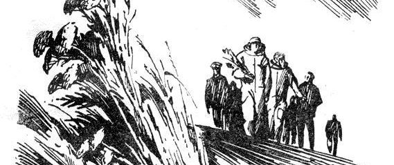

"All the conditions for murder are met": the strange history of a cosmonaut's quote
All the conditions necessary for murder are met if you shut two men in a cabin measuring 18 feet by 20 and leave them together for two months.
When discussing the living conditions of astronauts, this short, dark quote by Valery Ryumin (Валерий Викторович Рюмин) is often one of the opening lines. It is sure a clear hint that being an astronaut wasn't in fact such a glamourous experience, especially during mission that lasted several weeks or months.
Upon reading it a few times around the time of Ryumin's death in 2022, I got curious about the context surrounding it. When was it said, or written? Did any serious incident occur during that mission? Did anything close to murder ever happen in space?!
Time to find out.
Finding the source
One of the most obvious issues with my hunt became soon obvious: no source for the quote is ever reported, and two main, slightly different translations seem to exist:
All the necessary conditions to perpetrate a murder are met by locking two men in a cabin of 18 by 20 feet . . . for two months
as in this New Scientist article from 1993 (interestingly, texts quoting this version often retain the distinctive dots), or:
All the conditions for murder are met if you shut two men in a cabin measuring eighteen feet by twenty and leave them together for two months.
as in this article on the psycological effects of space flight from 2018. Each can be found in other places with slight variations, but they mostly boil down to these two versions. That may mean that, in all likelihood, more than one translation of the original Russian is available.
But where is the original and its translations?
The only clues that we find by scavenging around is that the original line comes from Valery's personal diary, written in 1980 during the Salyut 6 mission (spoiler: no murder occurred on Salyut 6). However, finding this diary isn't going to be easy. Sure it doesn't help that nobody out there looks interested in the slightest about reporting the source correctly.
In a strange exception, Wikipedia seems oblivious of this issue as well. Ryumin's page in any language I can skim-read (en, ru, es, it, pt, hu) doesn't report the quote, except from the French one, where again it's conveniently sourceless. The French quote is interesting, and I wish I found it earlier, because after realizing that most translation pages were a translated copy-paste of the English one I stopped looking for clues there. All we've got from this initial search is a line in the ISS page, under the "Stress" chapter, again sourceless.
In one depressingly hilariours run, I started from this not really authoritative blog post because, unlike more estabilished sources, this one did say where the quote was taken: it was a second-hand quote from “Rocket Men: The Epic History of the First Men on the Moon” by Craig Nelson.
Cool, where did Craig get this line from? Checking out the book leads to yet another copy-paste of the same identical line, not one word of context added, and a reference to another source: "This New Ocean: The Story of the First Space Age" by William E. Burrows, Random House, 1998, pg 513. Alright, let's check out this one too! Well it turns out, also this book quotes from yet another, more obscure source.
"Ryumin on murder: Reviews and Previews, Air & Space, June-July 1997, p. 84."
"Air & Space" is a periodical by the Smithsonian. So... an interview? Odd, given that many sources seem to imply it comes from a diary. But there are two version of this quote, after all. Are we onto something?
The all-knowing, forever-blessed Internet Archive turns out to have a copy of this exact issue of the magazine, so I can check this out as well and look for what I hope to be the original source. And you won't believe where the quote actually comes from.

It's from a freaking review of another book. Is this really a valid source for anything, Mr Burrows?!
But let's keep going. We still have a lead: the quote comes from the review of "Bold Endeavors: Lessons from Polar and Space Exploration" by Jack Stuster. Alright, let's get this one too and look further...
Unfortunately Jack also didn't care too much about the quality of its sources. In the reference section, all we get is the following:
"Ryumin, V. 1980. 175 days in space: A Russian cosmonaut's private diary, edited and translated by H. Gris. Unpublished manuscript."
I repeat. Unpublished manuscript.
Yes, that's where the trail ends. Henry Gris doesn't exist on the Internet except from another document citing his same unpublished work. He never published his translation of the diary of Ryumin. Game over.
This diary must be somewhere
After a few runs like the above (although most of them shorter, often ending up to "Bold Endeavors"), I decided it was time to change tactics. Alright, at least one version has to come from this unpublished translation of Ryumin's diary. But can we find any published edition of this diary?
Looking for "175 days in space: A Russian cosmonaut's private diary" gets no hits. Relaxing the query starts to return hits about "Diary of a Cosmonaut: 211 Days in Space", the diary of his colleague Valentin Lebedev (Валентин Витальевич Лебедев), which unlike his, was published in Russian and English. Looking for stuff like "Ryumin's diary" on Google and other search engines returns no leads except from more frustrating copy-paste of the same exact line.
So let's turn to Russian.
"Рюмин дневник" (roughly "Ryumin's diary") finally returns a helpful hit: "Год вне Земли: Дневник космонавта" ("A Year Outside the Earth: the Diary of a Cosmonaut"), which seems to be somewhat available online, although in Russian only.
And there finally, below a nicely hand-drawn page not even deep into the book, "убийств" (root for "murder") matches a line.

25 февраля 1979 года \ [...] На Земле немногие тогда себе представляли, возможно ли так долго быть вдвоем. Вот в рассказе американского писателя О. Генри «Справочник Гименея» есть такая просто трагическая фраза: «Если вы хотите поощрить ремесло человекоубийства, заприте на месяц двух человек в хижине восемнадцать на двадцать футов. Человеческая натура этого не выдержит». И написано это всего-навсего 70 лет назад. Всерьез такое обвинение человеческой натуре, естественно, принимать сейчас смешно. Однако длительное пребывание с глазу на глаз, даже с самым приятным тебе человеком, само по себе — испытание.
25th of February, 1979 \ [...] Back then, few people on Earth asked themselves whether it was possible to be alone together for so long. In a story by the American writer O. Henry “Hymen's Handbook” there is this simply tragic phrase: “If you want to encourage the craft of manslaughter, lock two people in a cabin eighteen by twenty feet for a month. Human nature can't stand it." And this was written only 70 years ago. Naturally, it is ridiculous to take such an accusation of human nature seriously now. However a prolonged stay face to face, even with the person you like the most, is in itself an ordeal.
(original translation).
So here is the actual source! Quite different from the quotes that circulate, but well, Henry Gris must have been creative in his unpublished translation. Also, it appears that it was written in early 1979, not in 1980 as it's often claimed: but it's an easy mistake to make, given that Ryumin flew a second time to Salyut 6 in 1980 and stayed on the station for even longer, breaking his own record.
Interestingly the line was written at the very start of the mission, on the first day logged in the diary. So it is not the product of existing conflict, but rather the anticipation of it. A difference that has strong implications for a line that is usually associated with the effects of long-term residencies in space.
Another difference between this version and the popular one is that Ryumin mentions one month only, not two. Why did all the translations double the number of months? I have no clue, but my best guess could be that this is the effect of a very sloppy translation. In the original, "month" ("месяц") and a declined form of "two" ("двух") appear close to each other, immediately followed by "person" ("человек"). But no one that speaks a crumble of Russian would think that "two" refers to "month" instead of "people" (singular in the original Russian for reasons). I get it, some declination rules in Russian are super confusing, but in my humble opinion there's really only one way you could read the quote above, and anything else is a stretch. After all the people involved are obviously two, and the number is written just once.
Anyway, we're done! Time to celebrate?
Wait a second... let's read it in context again.
Is Ryumin himself quoting someone else!?
There's one more layer to this
Luckily, Ryumin doesn't quote unpublished manuscripts. Searching for O. Henry “Hymen's Handbook” quickly brings us to another blessing of the Internet, Project Gutemberg. Here we discover that "The Handbook of Hymen" is the title of the fourth entry in the collection of short stories "Heart of the West", by William Sydney Porter, pen name "O. Henry". It seems like O. Henry was a rather famous author in Russia at the time, mainly thanks to some high quality translations of his works like the ones compiled by Y. Zamyatin.
"The Handbook of Hymen" is a story about two friends, Sanderson Pratt and Idaho Green, that get snowed in a cabin while prospecting for gold in the Bitter Root Mountains. Yes, it's an American tale from one of the mid nineteenth century's gold rushes. Nothing to do with space.
Let's go find this line once more.
(Here I report the source with abundant context: you can read the full short story on Project Gutemberg).
That evening it began to snow, with the wind strong in the east. Me and Idaho moved camp into an old empty cabin higher up the mountain, thinking it was only a November flurry. But after falling three foot on a level it went to work in earnest; and we knew we was snowed in. We got in plenty of firewood before it got deep, and we had grub enough for two months, so we let the elements rage and cut up all they thought proper. \ If you want to instigate the art of manslaughter just shut two men up in a eighteen by twenty-foot cabin for a month. Human nature won’t stand it. \ When the first snowflakes fell me and Idaho Green laughed at each other’s jokes and praised the stuff we turned out of a skillet and called bread. At the end of three weeks Idaho makes this kind of a edict to me. Says he: \ “I never exactly heard sour milk dropping out of a balloon on the bottom of a tin pan, but I have an idea it would be music of the spears compared to this attenuated stream of asphyxiated thought that emanates out of your organs of conversation. The kind of half-masticated noises that you emit every day puts me in mind of a cow’s cud, only she’s lady enough to keep hers to herself, and you ain’t.” \ “Mr. Green,” says I, “you having been a friend of mine once, I have some hesitations in confessing to you that if I had my choice for society between you and a common yellow, three-legged cur pup, one of the inmates of this here cabin would be wagging a tail just at present.” \ This way we goes on for two or three days, and then we quits speaking to one another.
No more references to any other work? Seems like not: William Sydney Porter is the final, indiscussed author of this troubled line.
The whole arc of the two men locked up in the same cabin is not a lot more than a plot device in the original story, an excuse to make the two men read two different books and "apply their learnings" on the courting of a girl from a nearby village. But the line must have struck a chord with Ryumin, and it's not hard to see why.
Some unexpected French
To their credit, French Wikipedia does quote Ryumin with enough context to figure out that the source of the fateful line is actually Porter. Unfortunately checking Wikipedia's entry for Ryumin in French didn't cross my mind until I sit down to write this post. On top of it, the quote is not only lacking references, but is also very creative:
O. Henry, le célèbre humoriste américain, explique dans une de ses nouvelles que le meilleur moyen d’encourager l’art de l’assassinat consiste à enfermer deux hommes pour deux mois dans un local de cinq mètres sur six. En pénétrant dans Saliout qui allait être notre maison pendant six mois, nous nous sommes dit : « nous sommes comme des frères : je suis toi et tu es moi. »
O. Henry, the famous American comedian, explains in one of its stories that the best way to encourage the art of murder consists of locking two man for two months in a room of five meters by six. Boarding the Salyut, which was going to be our home for six months, we said to each other: "we're like brothers: I'm you and you're me".
(original translation). Don't ask me where any of this comes from. It's so far removed from the actual paragraph of Ryumin's diary cited above that I'm wondering if any published translation of the diary has ever been available in French, or whether there is another version of the Russian original, or whether this is from an interview to Ryumin and has nothing to do with the diary... I wish there was any way to know.
On a cursory look for French sources I found an even stranger version of the base quote:
Toutes les conditions nécessaires pour commettre un meurtre sont réunies dès lors que sont enfermés deux hommes dans une cabine de cinq mètres sur six, et qu'on les laisse vivre ensemble pendant dix mois.
All the necessary conditions to commit a murder are met once two men are locked in a cabin of five meters by six and are left to live together for ten months.
(original translation). So it's ten months now? Is this a misreading of "deux" (two) to "dix" (ten)? I believe no French person could make this mistake. Anyway, I'm not going to go into this whole new rabbit hole. Maybe another time.
Honorable mention
A slight exception to this state of affairs can be found in this other obscure blog post about a TV series, but it adds a lot of "supposedly" and "apparently" to the right lead, which doesn't inspire a lot of confidence. It also mentions two months instead of one another hint that they found it in the same mysterious English translation I haven't managed to pinpoint. I wish I could ask the author where did they read it.
An unexpected conclusion
At the end of the day, this adventure could be seen as a cautionary tale for taking good care of what sources you cite. But there's also another unexpected turn of events: as the original quote was in English, none of the many-steps-removed quotes is actually correct. The right one is the version no one reports, because no one knows it's the original:
If you want to instigate the art of manslaughter just shut two men up in a eighteen by twenty-foot cabin for a month.
And note: a single month is enough, no need to wait for two.